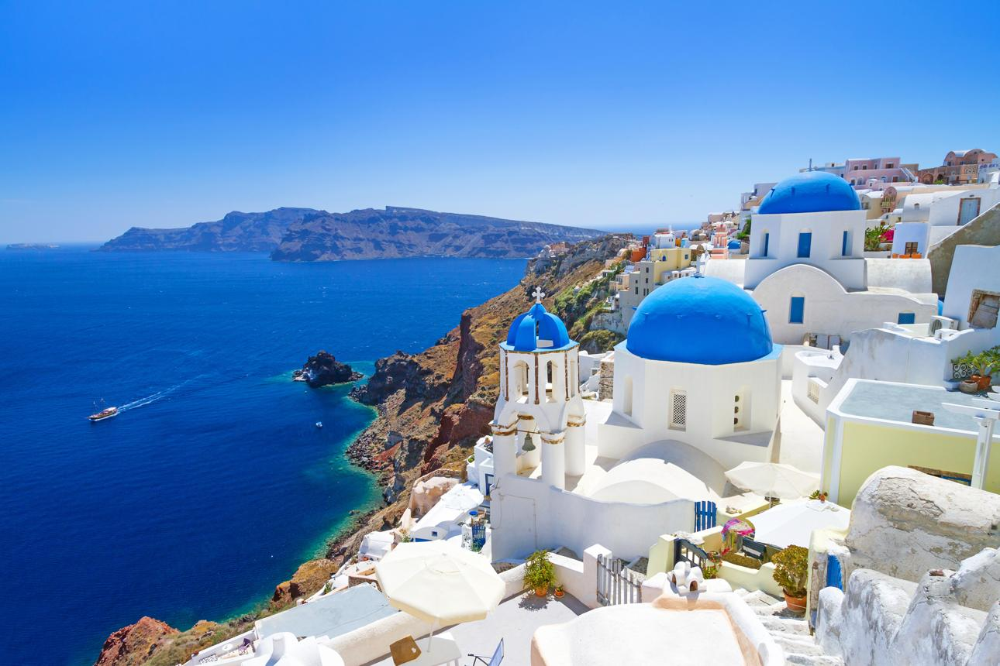
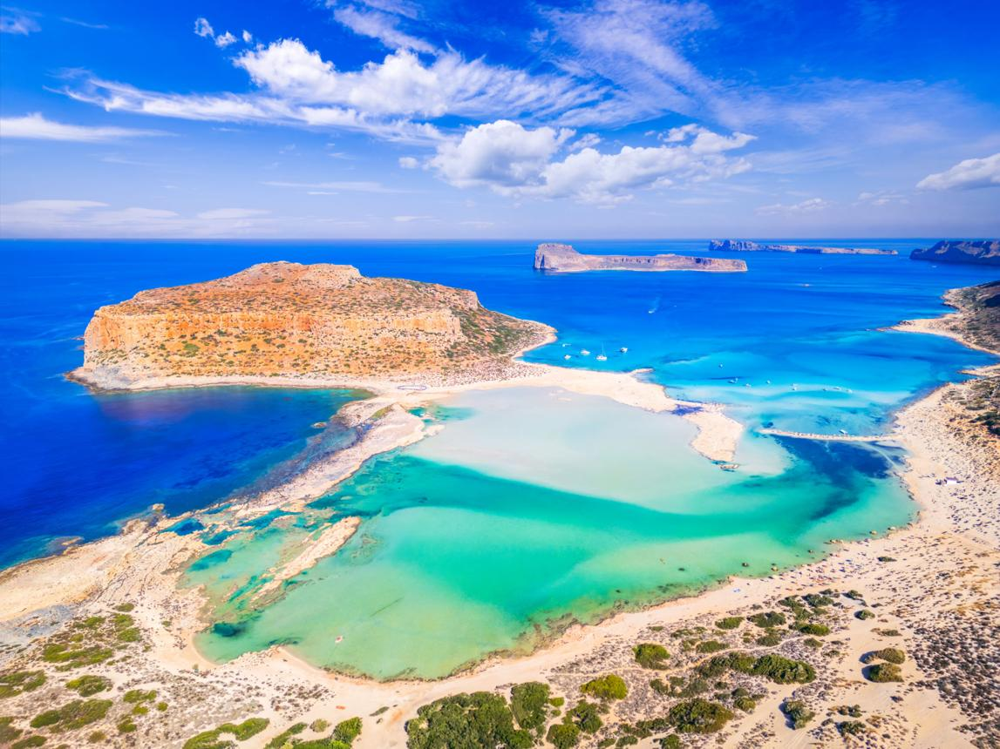
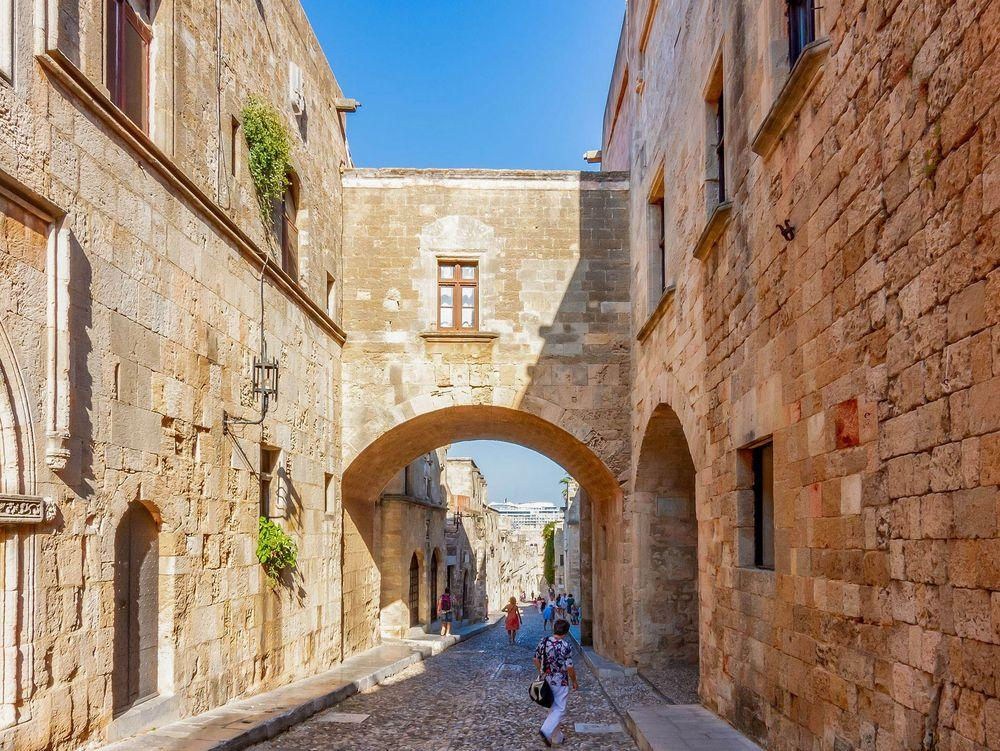

"Η Ελλάδα είναι ένας από τους πιο όμορφους τουριστικούς προορισμούς στον κόσμο. Διαθέτει υπέροχα νησιά, καταγάλανες θάλασσες, παραδοσιακά χωριά και σημαντικά ιστορικά μνημεία. Κάθε χρόνο εκατομμύρια επισκέπτες επιλέγουν την Ελλάδα για τις διακοπές τους".
Η Σαντορίνη είναι ένα από τα πιο γνωστά ελληνικά νησιά. Βρίσκεται στο Αιγαίο Πέλαγος και
ανήκει στις Κυκλάδες. Είναι γνωστή για τα λευκά σπίτια με τους γαλάζιους τρούλους, τα
γραφικά σοκάκια και το εντυπωσιακό ηλιοβασίλεμα στην Οία.
Οι επισκέπτες μπορούν να απολαύσουν τη θέα στην καλντέρα, να επισκεφθούν
παραδοσιακά χωριά και να κολυμπήσουν στις ιδιαίτερες παραλίες του νησιού.

Η Κρήτη είναι το μεγαλύτερο νησί της Ελλάδας. Είναι γνωστή για την πλούσια ιστορία της,
τον αρχαίο Μινωικό πολιτισμό, τις όμορφες παραλίες και την παραδοσιακή κουζίνα της.
Ένα από τα σημαντικότερα αξιοθέατα είναι το Ανάκτορο της Κνωσού, το οποίο συνδέεται με
τον πολιτισμό της αρχαίας Κρήτης. Επίσης, το νησί διαθέτει εντυπωσιακά φυσικά τοπία,
όπως το φαράγγι της Σαμαριάς.

Η Ρόδος βρίσκεται στα Δωδεκάνησα και αποτελεί έναν ιδιαίτερα δημοφιλή τουριστικό
προορισμό. Είναι γνωστή για τη μεσαιωνική Παλιά Πόλη, το Παλάτι του Μεγάλου Μαγίστρου
και τις όμορφες παραλίες της.
Οι επισκέπτες μπορούν να περπατήσουν στα ιστορικά σοκάκια, να γνωρίσουν την ιστορία
του νησιού και να απολαύσουν τη φυσική ομορφιά του.
